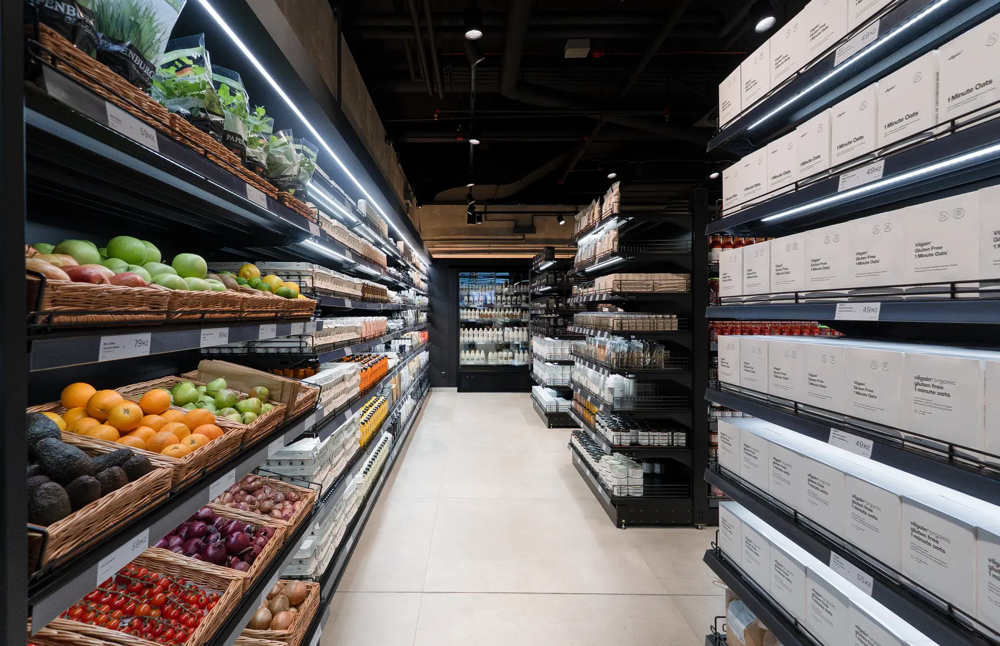
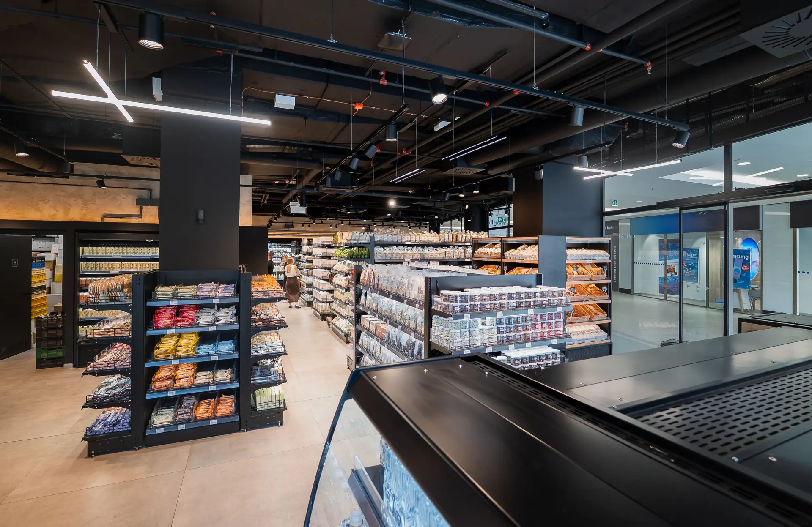
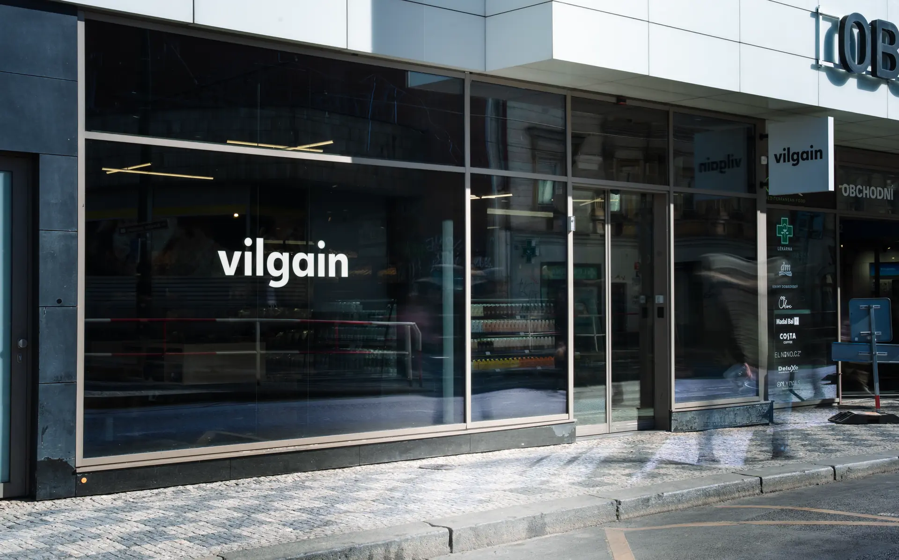
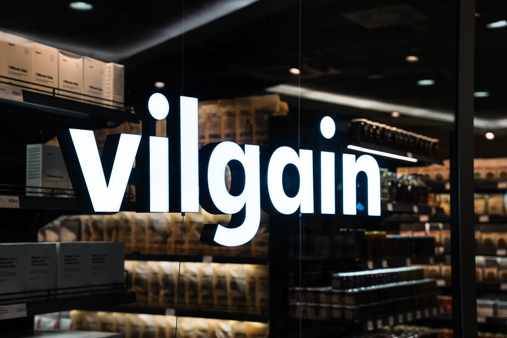

Now — Vilgain
Fresh food,
built to matter.
Building Vilgain’s fresh food and grab-and-go category from the ground up — bringing taste, nutrition, product quality and everyday convenience into one working system.
Category development · Product standards · Operations · Launch




01 / 04